| 2026.01下 大寒 鸡始乳 征鸟厉疾 | 2026.02上 大寒丨立春 水泽腹坚 东风解冻 | 2026.02中 立春 蛰虫始振 鱼陟负冰 | 2026.02下 雨水 獭祭鱼 候雁北 | 2026.03上 雨水丨惊蛰 草木萌动 桃始华 | 2026.03中 惊蛰 仓庚鸣 鹰化为鸠 | 2026.03下 春分 玄鸟至 雷乃发声 | 2026.04上 春分丨清明 始电 桐始华 | 2026.04中 清明 田鼠化为鴽 虹始见 | 2026.04下 谷雨 萍始生 鸣鸠拂其羽 | 2026.05上 谷雨丨立夏 戴胜降于桑 蝼蝈鸣 | 2026.05中 立夏 蚯蚓出 王瓜生 | |
|---|---|---|---|---|---|---|---|---|---|---|---|---|
|
☀️煌煌 🌙皎皎 💫熒熒 🐤盈生 🪷🌸🌸🌿 和48·月23·旬7 |   盈生观书一卷 则增一卷之益 |       盈生观书一卷 则增一卷之益 |      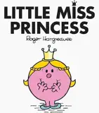  盈生观书一卷 则增一卷之益 |       盈生观书一卷 则增一卷之益 |       盈生观书一卷 则增一卷之益 |      盈生观书一卷 则增一卷之益 |     盈生观书一卷 则增一卷之益 | |||||
|
🐦🔥凤书 🪷🌸🌸 和5·月18·旬0 |  | 凤书观书一卷 则增一卷之益 |  凤书观书一卷 则增一卷之益 |  | 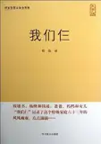 凤书观书一卷 则增一卷之益 | 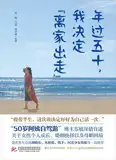 凤书观书一卷 则增一卷之益 | 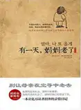 凤书观书一卷 则增一卷之益 | |||||
|
🏔️致虚 🪷🌸🌿🌿🌱🌱 和44·月14·旬4 |  | 致虚观书一卷 则增一卷之益 |  | 致虚观书一卷 则增一卷之益 |  致虚观书一卷 则增一卷之益 |      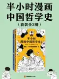  致虚观书一卷 则增一卷之益 |  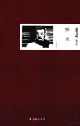     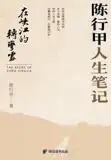 致虚观书一卷 则增一卷之益 | 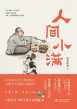  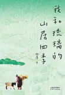 .webp)    致虚观书一卷 则增一卷之益 | 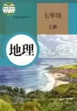 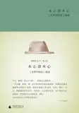 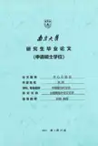 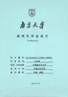 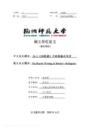 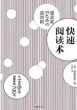 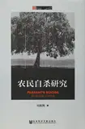    致虚观书一卷 则增一卷之益 | 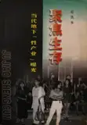  致虚观书一卷 则增一卷之益 |   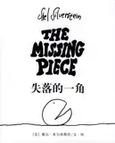 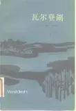    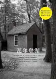 致虚观书一卷 则增一卷之益 |  致虚观书一卷 则增一卷之益 |
|
🌲抱朴 🪷 和9·月12·旬3 |  | |   抱朴观书一卷 则增一卷之益 |  抱朴观书一卷 则增一卷之益 | |  抱朴观书一卷 则增一卷之益 |  抱朴观书一卷 则增一卷之益 | 抱朴观书一卷 则增一卷之益 | 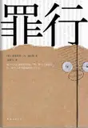 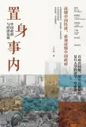 | 抱朴观书一卷 则增一卷之益 | 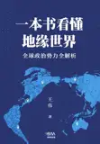 抱朴观书一卷 则增一卷之益 | 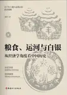 抱朴观书一卷 则增一卷之益 |
|
🎋清一 🌸🌸🌿🌿🌱 和25·月14·旬3 |  清一观书一卷 则增一卷之益 |  |  |  清一观书一卷 则增一卷之益 |  |   清一观书一卷 则增一卷之益 | 清一观书一卷 则增一卷之益 |  清一观书一卷 则增一卷之益 | 清一观书一卷 则增一卷之益 | 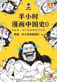 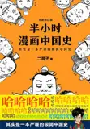  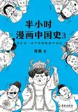 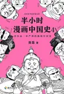 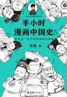 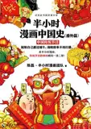 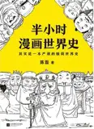 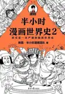 清一观书一卷 则增一卷之益 | 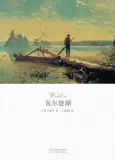  清一观书一卷 则增一卷之益 | 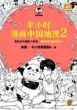 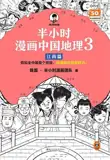 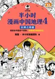 清一观书一卷 则增一卷之益 |
|
🦁西翁 🌸🌿🌿🌱🌱 和17·月3·旬1 |  | | 西翁观书一卷 则增一卷之益 |   西翁观书一卷 则增一卷之益 |  |   西翁观书一卷 则增一卷之益 |  西翁观书一卷 则增一卷之益 |  西翁观书一卷 则增一卷之益 | 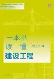 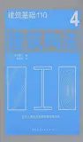 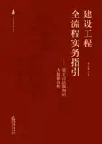 西翁观书一卷 则增一卷之益 | 西翁观书一卷 则增一卷之益 | 西翁观书一卷 则增一卷之益 | 西翁观书一卷 则增一卷之益 |
|
🌊善下 🌸🌿 和2·月6·旬0 |  |  | 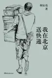 善下观书一卷 则增一卷之益 | 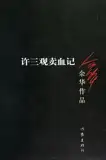 善下观书一卷 则增一卷之益 | ||||||||
|
💰锦安 🌿🌿🌱 和7·月4·旬0 |  | | | 锦安观书一卷 则增一卷之益 | 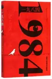 | 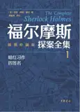 锦安观书一卷 则增一卷之益 | 锦安观书一卷 则增一卷之益 | 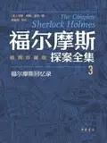 锦安观书一卷 则增一卷之益 | 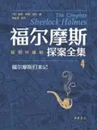 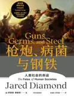 锦安观书一卷 则增一卷之益 | |||
|
🪨卓恒 🌱 和1·月1·旬0 | 卓恒观书一卷 则增一卷之益 |